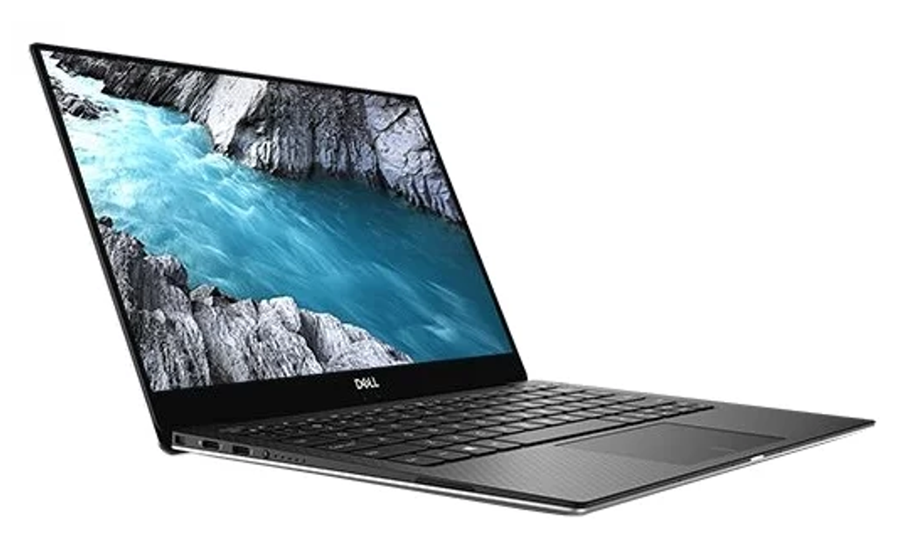
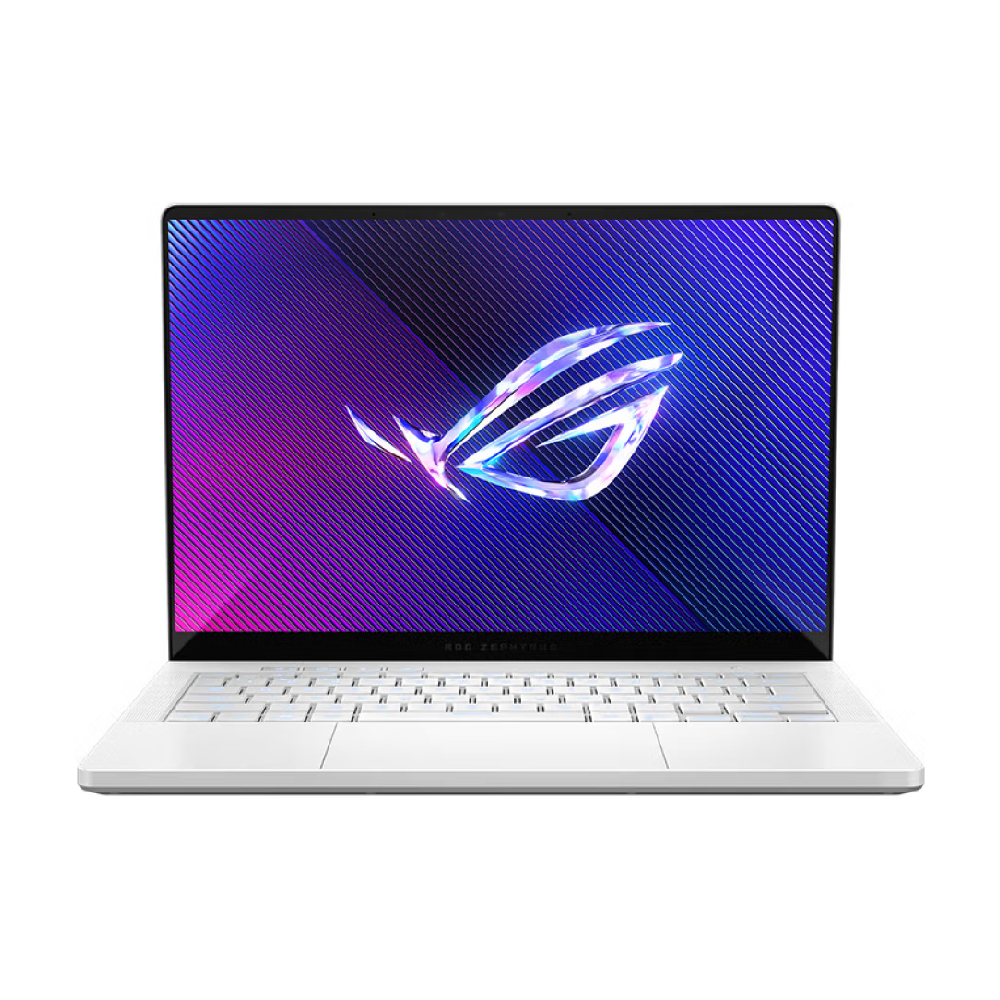
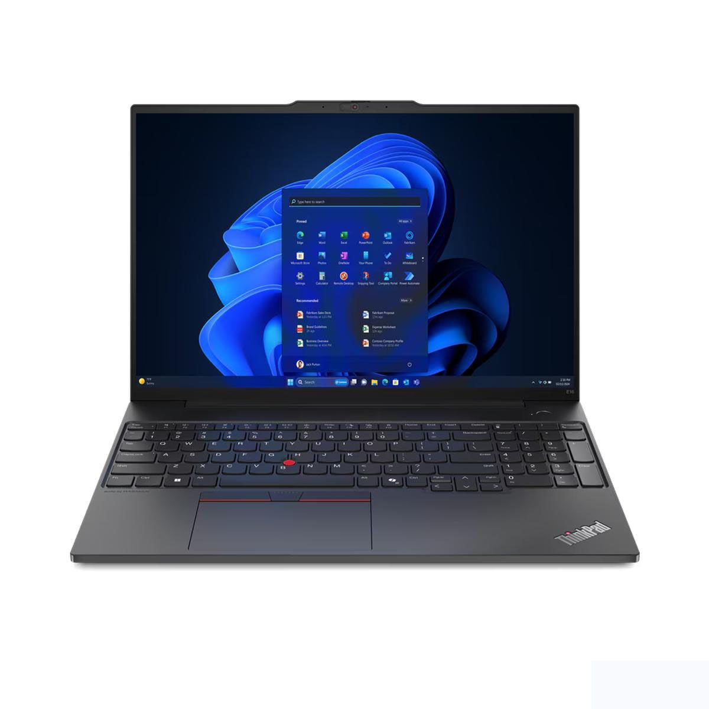
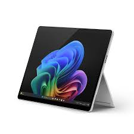
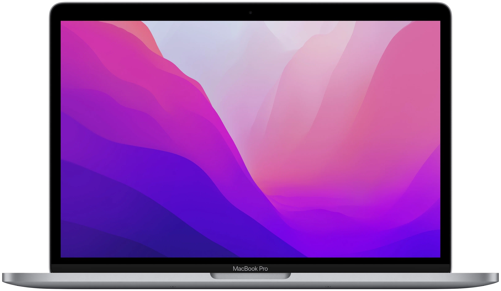

Ноутбук: Особенности и характеристики
Определение
Ноутбук — это портативный компьютер, который сочетает в себе функциональность настольного ПК и мобильность. Он имеет встроенные компоненты, такие как клавиатура, экран, аккумулятор и системы охлаждения, что позволяет использовать его в различных условиях — от офисов до поездок.
История создания
История ноутбуков начинается с 1981 года, когда Osborne Computer Corporation выпустила Osborne 1, первый коммерчески успешный портативный компьютер. Он весил около 11 кг и имел 5-дюймовый экран. Несмотря на свою громоздкость, Osborne 1 открыл новые горизонты для мобильных вычислений.
С 1989 года, когда Apple представила Macintosh Portable, началась эволюция дизайна и функциональности. Macintosh Portable был более компактным, но все еще имел значительный вес. В начале 1990-х годов Toshiba и IBM начали выпускать более легкие модели, такие как Toshiba T1100 и IBM ThinkPad, которые стали основой для современных ноутбуков.
В 2000-х годах появились ультрабуки — устройства с тонким профилем и высокой производительностью. Примеры таких устройств включают Dell XPS 13 и Apple MacBook Air. Эти ноутбуки стали символом мобильности и стиля.
Виды ноутбуков
-

Ультрабуки: Эти устройства предлагают тонкий и легкий дизайн с длительным временем работы от батареи. Они часто оснащены процессорами Intel Core и SSD-дисками для быстрого доступа к данным. Пример: Dell XPS 13. -

Игровые ноутбуки: Оснащены мощными графическими картами и процессорами, позволяя запускать современные игры на высоких настройках. Они имеют улучшенные системы охлаждения и часто предлагают RGB-подсветку клавиатуры. Пример: ASUS ROG Zephyrus. -

Бизнес-ноутбуки: Разработаны с акцентом на надежность и безопасность данных. Они могут иметь функции шифрования и механизмы защиты от несанкционированного доступа. Пример: Lenovo ThinkPad. -

2-в-1 устройства: Эти ноутбуки могут использоваться как в режиме ноутбука, так и в режиме планшета благодаря поворотному экрану или съемной клавиатуре. Пример: Microsoft Surface Pro. -

Мультимедийные ноутбуки: Оптимизированы для работы с видео и графикой, часто имеют высококачественные дисплеи и мощные звуковые системы. Пример: Apple MacBook Pro.
Технологии
Современные ноутбуки используют различные технологии для повышения производительности и удобства:
- Процессоры: Современные модели оснащены многоядерными процессорами Intel Core или AMD Ryzen, которые обеспечивают высокую производительность в многозадачном режиме.
- Хранение данных: SSD-диски обеспечивают значительно более быстрый доступ к данным по сравнению с традиционными HDD.
- Дисплеи: Высокое разрешение (например, 4K) и технологии IPS обеспечивают яркие цвета и широкий угол обзора.
- Беспроводные технологии: Поддержка Wi-Fi 6 и Bluetooth 5.0 обеспечивает быструю передачу данных и стабильное соединение.
Применение
Ноутбуки находят применение в самых различных сферах:
- Образование: Студенты используют ноутбуки для написания курсовых работ, онлайн-обучения и участия в вебинарах.
- Работа: Профессионалы используют их для выполнения офисных задач, видеоконференций и работы с графическими программами.
- Развлечения: Ноутбуки подходят для потоковой передачи видео, игр и редактирования мультимедиа.
- Творчество: Художники и дизайнеры используют ноутбуки для работы с графическими редакторами и создания цифрового контента.